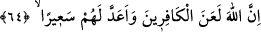

sordular, belli olmadı. İmam Âzam Ebû Hanîfe (r.a.)’ı çağırdılar. O rüyâyı şöyle tâbir
etti: “Kimsenin bilmediği ve bilemeyeceği beş ilme işârettir. Bu beş ilim, şu âyette
zikredilmiştir; Hak Teâlâ buyurur: “Kıyamet vakti hakkındaki bilgi, ancak Allâh’ın
katındadır...” (Lokman, 33/34)” Halîfe ona iyi bir elbise verdi, ama o giymedi.
“Ne bilirsin” Onun kopma vaktini sana bildiren şey nedir? Yâni hiçbir şey onu sana
asla bildiremez, sen de onu bilemezsin. Allah Teâlâ bildirmeksizin gaybı bilmek,
peygamberliğin şartından değildir. “belki de” kıyâmetin “zamanı yakındır.” Ya da
kıyâmet yakın bir vakitte kopar.
Bu âyette kıyametin çabuk gelmesini isteyenlere bir tehdid, Hz. Peygamber (s.a.)’i
sıkıntıya sokmak isteyenleri de susturma vardır.
Âlimler kıyâmet alâmetlerinden bazılarını şöyle sıralamışlardır: Kişinin bir işi yarın
yapacağına söz verip günü gelince sözünden cayması. Kötü kimselerin el üstünde
tutulup iyi insanların aşağılanması. İlmin ortadan kaldırılıp cehâletin açığa çıkması.
Zinâ ve günahların yayılması. Kötü yoldaki kadınların raks etmesi. Şarap ve her türlü
müskirâtın alenî olarak içilmesi. Ânî ölümlerin çoğalması. Câmilerde fâsıkların
seslerinin yükselmesi. Bitkilere faydası olmayan yağmurların yağması.
Bir
hadîste
şöyle
buyrulmuştur:
“Fuhuş
ve
ahlaksızlık
ortaya
çıkıp
yaygınlaşmadıkça,
altın
ve
gümüş
paraya
tapınılmadıkça
kıyamet
kopmayacaktır.”[317] Hz. Peygamber (s.a.) kendi zamanında veya ondan sonraki
devirlerde henüz gerçekleşmemiş olan daha bir takım işler ve alâmetlerden söz etmiştir.
Şiddetli bir rüzgar estiği zaman Hz. Peygamber (s.a.)’in rengi değişir[318] ve vefâtını
kasdederek: “Kıyamet olmasından korktum”[319] buyururdu. Yine: “Gözümü açıp
kapattığımda hemen kıyâmetin kopmuş olacağını zannederim.” buyurmuştur. Çünkü
her insanın ölümü onun küçük kıyametidir. Yine bir asırda yaşayan insanların ölmesi de
orta kıyamettir. Allah Teâlâ’dan bizi hazırlıklı kılmasını dileriz.
Molla Câmî şöyle demiştir:
Bugünün işine esir olma, yarın için azık biriktir.
Ömrünün gündüzü ikindiye erdi; ikindi akşam namazını çekti.
Uyku, yakın bir ölümdür; girdap dalgası, yakın ölümdür.
Fakîr (Bursevî) der ki:
Uyan, artık kıyamet koptu
Çünkü mahlûkâtın ömrü bir saattir